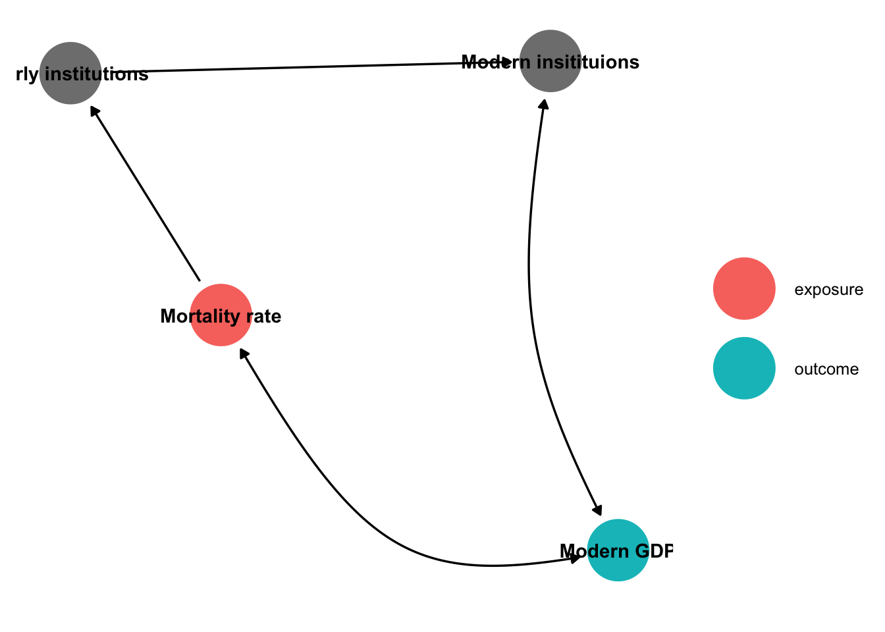

earnings_df <- read.csv("../data/earnings.csv", sep = ";") %>%
tibble() %>%
transmute(
sex = ifelse(nem == 1, "male", "female"),
age = eletkor,
school = case_when(
iskvegz == 1 ~ "primary",
iskvegz == 2 ~ "secondary",
iskvegz == 3 ~ "tertiary",
),
position = case_when(
munkakor == 1 ~ "Highest leader",
munkakor == 2 ~ "Department/institute leader",
munkakor == 3 ~ "Other (economic, legal, technical, etc.) leader",
munkakor == 4 ~ "University/college teacher",
munkakor == 5 ~ "Highly trained clerk",
munkakor == 6 ~ "Clerk/secretary",
munkakor == 7 ~ "Trained/assistant worker"
),
earning = kereset
)Causality
Readings and class materials for Tuesday, October 24, 2023
Statistics and data analysis are widely applied in every field of science, as there is a need to objectively perceive things and either support or reject theories. Therefore, it is often formulated that statistics is the grammar of science. However, each field of science has its specific characteristics. In economics and other disciplines, the focus is usually on determining whether a demonstrated relationship can be considered causal or not.
Causality is important in economics because it allows us to understand the relationships between different economic variables and determine the true impact of various factors on economic outcomes. By establishing causal relationships, economists can make informed policy recommendations, predict the consequences of different actions, and evaluate the effectiveness of interventions.
Tip
Demonstrating causal effects is generally not complicated from a modeling perspective, but it needs to be supported by theories in order for the claim to hold. This is what adds value at a high (and medium) level to the publication, as we are not simply talking about a detected association, but rather finding the causality. Ones you overcome the initial difficulties of modelling, the important question will always remain that: is it truly a casual effect without bias?
Why?
Policy-making: Causal relationships help policymakers identify the effective interventions to achieve desired economic outcomes. By understanding the causal impact of different policies, governments can make informed decisions about taxation, regulation, and public spending to promote economic growth, reduce inequality, or address market failures.
Counterfactual Analysis: Causality allows economists to estimate what would have happened in the absence of a particular event or policy intervention. This counterfactual analysis helps in evaluating the effectiveness of policies and estimating their true impact on economic outcomes.
Understanding Market Dynamics: Causal relationships help economists understand how changes in one economic variable affect others. For example, understanding the causal relationship between interest rates and investment can provide insights into how changes in monetary policy impact economic activity.
Evaluating Economic Theories: Causality is crucial for testing and validating economic theories. By examining causal relationships, economists can assess the validity of economic models and theories, refine them, and develop a deeper understanding of how the economy functions.
Predictive Power: Causal relationships allow economists to make predictions about future economic outcomes. By understanding the causal mechanisms at play, economists can forecast the impact of changes in economic variables and provide valuable insights for businesses, policymakers, and individuals.
Some example methods
- Granger Causality: Many questions may arise where an acceptable theory is that the cause precedes the consequence. One such case is a bar fight, where the activity that triggered the fight was likely the cause leading to the fight. Consequently, models based on Granger causality have become widespread, such as vector autoregressive models in the case of time series.
Caution
It should be noted that this assertion does not necessarily hold true. Let us imagine the scenario where the sultan wakes up every day and commands the sun to rise, and indeed the sun rises. It is worth contemplating whether it was truly the word of the sultan that caused the sun to rise.
- Randomized Controlled Trials (RCTs): RCTs involve randomly assigning individuals or groups to different treatment conditions and measuring the outcomes. By randomly assigning treatments, RCTs help establish a causal relationship between the treatment and the outcome, as any differences observed can be attributed to the treatment itself.
Caution
RCTs are often considered the gold standard for establishing causality but most of the time may not be feasible or ethical in economic contexts.
- Instrumental Variables (IV): IV analysis is used when there is endogeneity or potential confounding between the treatment variable and the outcome variable. An instrumental variable is a variable that is correlated with the treatment variable but not directly with the outcome. By using an instrumental variable, researchers can estimate the causal effect of the treatment variable on the outcome while addressing endogeneity.
Warning
The application of instrumental variables is often the most convincing solution to validate a controversial economic theory (for example, whether institutions cause well-being or whether well-being leads to high-quality institutions). However, finding a good instrument is very challenging, and providing substantial evidence requires extensive and in-depth knowledge in the specific subject area.
Difference-in-Differences (DiD) Analysis: DiD analysis compares the changes in outcomes between a treatment group and a control group before and after a specific intervention or treatment. By comparing the differences in changes over time, DiD analysis helps identify the causal effect of the treatment by accounting for time-varying factors that affect both groups. One frequent application area is the event study design, which you will encounter later on.
Propensity Score Matching (PSM): PSM is used to address selection bias in observational studies. It involves estimating the propensity score, which is the probability of receiving the treatment given a set of observed characteristics. By matching individuals with similar propensity scores, researchers can create a control group that closely resembles the treatment group, allowing for a more accurate estimation of the causal effect.
Regression Discontinuity Design (RDD): RDD is used when there is a clear cutoff or threshold that determines whether an individual receives a treatment or not. By comparing individuals just above and below the cutoff, RDD helps estimate the causal effect of the treatment by exploiting the discontinuity in treatment assignment (Lee and Lemieux 2010). This is a widely adopted solution in educational policy matters.
The basics
When discussing causality, it is neccessary that we possess a comprehensive understanding of some fundamental definitions.
Treatment: In the context of causal analysis, treatment refers to an intervention or action that is applied to a group or individual with the intention of bringing about a change in their outcomes or behavior. It can be a medical treatment, a policy intervention, an educational program, or any other deliberate action aimed at influencing a specific outcome of interest.
Control Group: A control group is a group of individuals or units that do not receive the treatment or intervention being studied. The purpose of the control group is to provide a baseline or comparison against which the effects of the treatment can be measured. By comparing the outcomes of the treated group with the outcomes of the control group, researchers can assess the causal impact of the treatment.
Treated Group: The treated group refers to the group of individuals or units that receive the treatment or intervention being studied. This group is exposed to the treatment and its outcomes are compared to those of the control group. The treated group allows researchers to evaluate the effects of the treatment and determine its effectiveness in achieving the desired outcomes.
Outcome: An outcome refers to the result or consequence of a treatment or intervention. It is the variable of interest that researchers measure or observe to assess the impact of the treatment. Outcomes can be various types, such as health outcomes, educational outcomes, economic outcomes, or behavioral outcomes. The comparison of outcomes between the treated and control groups helps determine the causal effect of the treatment.
ITE (Individual Treatment Effect): \[ ITE = Y_{1i} - Y_{0i} \] where \(Y_{1i}\) represents the outcome for individual \(i\) when they receive the treatment, and \(Y_{0i}\) represents the outcome for individual \(i\) when they do not receive the treatment.
Caution
Most of the time, it is impossible to observe the ITE values. One will be treated or not, but it is a rare case, when both values are observed.
- ATE (Average Treatment Effect): \[ ATE = \frac{1}{N} \sum_{i=1}^{N} (Y_{1i} - Y_{0i}) \] where \(N\) is the total number of individuals in the population.
Tip
99% of the time, we care about ATE.
- ATET (Average Treatment Effect on the Treated): \[ ATET = \frac{1}{N_{T}} \sum_{i=1}^{N_{T}} (Y_{1i} - Y_{0i}) \] where \(N_{T}\) is the number of individuals who receive the treatment.
Matching
Matching is a technique used in causal analysis to create comparable groups by pairing or matching treated and control units based on their observed characteristics. The goal of matching is to reduce the potential bias caused by confounding variables, which are factors that may influence both the treatment assignment and the outcome of interest.
Matching involves identifying individuals or units in the treated group and finding similar individuals or units in the control group based on a set of pre-treatment characteristics or covariates. These covariates can include demographic information, socioeconomic status, health conditions, or any other relevant factors that may affect both the treatment assignment and the outcome.
Matching can be particularly useful in situations where there are limited control units available. It allows for a more rigorous comparison between the treated and control groups, helping to isolate the causal impact of the treatment and improve the validity of the analysis. Matching methods can range from simple techniques like nearest neighbor matching to more advanced methods like propensity score matching or genetic matching, depending on the complexity of the data and research question.
earnings_df# A tibble: 647 × 5
sex age school position earning
<chr> <int> <chr> <chr> <dbl>
1 male 50 tertiary Highest leader 2411.
2 female 51 tertiary Highest leader 1073.
3 male 53 tertiary Highest leader 1990.
4 female 64 tertiary Highest leader 1609.
5 male 32 secondary Department/institute leader 706.
6 female 33 tertiary Department/institute leader 994.
7 female 34 secondary Department/institute leader 632.
8 male 35 secondary Department/institute leader 512.
9 male 35 tertiary Department/institute leader 987.
10 female 35 tertiary Department/institute leader 880.
# ℹ 637 more rowsOLS
# A tibble: 2 × 5
term estimate std.error statistic p.value
<chr> <dbl> <dbl> <dbl> <dbl>
1 (Intercept) 493. 13.7 36.0 1.13e-156
2 sexmale 46.7 22.1 2.11 3.52e- 2# A tibble: 11 × 5
term estimate std.error statistic p.value
<chr> <dbl> <dbl> <dbl> <dbl>
1 (Intercept) 284. 39.6 7.18 2.02e-12
2 sexmale 32.0 15.4 2.08 3.84e- 2
3 age 2.04 0.750 2.71 6.81e- 3
4 schoolsecondary 8.71 26.2 0.333 7.39e- 1
5 schooltertiary 44.4 30.7 1.45 1.48e- 1
6 positionDepartment/institute leader 497. 30.1 16.5 4.63e-51
7 positionHighest leader 1315. 95.7 13.7 8.46e-38
8 positionHighly trained clerk 66.8 27.2 2.45 1.45e- 2
9 positionOther (economic, legal, techni… 515. 44.7 11.5 4.99e-28
10 positionTrained/assistant worker -88.3 51.0 -1.73 8.38e- 2
11 positionUniversity/college teacher 12.7 25.4 0.500 6.17e- 1Exact matching
- Lets calculate the difference in each possible group the average earnings.
earnings_df %>%
group_by(sex, age, school, position) %>%
summarise(
n = n(),
earning = mean(earning)
)# A tibble: 351 × 6
# Groups: sex, age, school [203]
sex age school position n earning
<chr> <int> <chr> <chr> <int> <dbl>
1 female 24 primary Clerk/secretary 1 537.
2 female 24 tertiary Highly trained clerk 2 406.
3 female 25 primary Clerk/secretary 1 342.
4 female 25 secondary Highly trained clerk 2 450.
5 female 26 primary Clerk/secretary 2 373.
6 female 26 tertiary Highly trained clerk 1 583.
7 female 27 primary Clerk/secretary 1 367.
8 female 27 secondary Highly trained clerk 1 426
9 female 27 secondary Trained/assistant worker 1 327.
10 female 27 tertiary Highly trained clerk 2 384.
# ℹ 341 more rows- Compare the difference between the treatment and the related control groups.
earnings_df %>%
group_by(sex, age, school, position) %>%
summarise(
n = n(),
earning = mean(earning)
) %>%
ungroup() %>%
pivot_wider(names_from = sex, values_from = c(n, earning)) %>%
mutate(
d = earning_male - earning_female
) %>%
drop_na()# A tibble: 79 × 8
age school position n_female n_male earning_female earning_male d
<int> <chr> <chr> <int> <int> <dbl> <dbl> <dbl>
1 26 primary Clerk/sec… 2 1 373. 587 214.
2 27 primary Clerk/sec… 1 1 367. 342. -24.9
3 27 secondary Highly tr… 1 2 426 411 -15
4 27 tertiary Universit… 1 2 227. 279. 51.2
5 28 secondary Clerk/sec… 1 1 372. 381. 9.10
6 29 secondary Clerk/sec… 1 1 311. 575 264.
7 31 secondary Highly tr… 1 1 338. 408. 70.8
8 32 primary Clerk/sec… 1 1 250 486. 236.
9 34 secondary Clerk/sec… 1 1 321. 376. 54.7
10 34 tertiary Highly tr… 2 1 538. 614. 75.4
# ℹ 69 more rows
Important
It is important to note that an exact match may only be found in a limited number of instances. This is primarily due to the presence of a numerical covariate with a multitude of potential values.
Coarsened exact matching
We lump qualitative variables (e.g., country groups, young/old subjects) and we divide quantitative variables into intervals (e.g., age groups).
coarsened_matching_df <- earnings_df %>%
mutate(
age_group = cut(age, breaks = c(0, 30, 40, 50, Inf))
) %>%
group_by(sex, age_group, school, position) %>%
summarise(
n = n(),
earning = mean(earning)
) %>%
ungroup() %>%
pivot_wider(names_from = sex, values_from = c(n, earning)) %>%
mutate(
d = earning_male - earning_female
)
coarsened_matching_df# A tibble: 52 × 8
age_group school position n_female n_male earning_female earning_male d
<fct> <chr> <chr> <int> <int> <dbl> <dbl> <dbl>
1 (0,30] primary Clerk/s… 7 3 401. 422. 20.6
2 (0,30] primary Highly … 1 2 424. 491. 66.8
3 (0,30] seconda… Clerk/s… 2 4 341. 400. 58.3
4 (0,30] seconda… Highly … 7 2 421. 411 -10.3
5 (0,30] seconda… Trained… 1 NA 327. NA NA
6 (0,30] seconda… Univers… 1 NA 339. NA NA
7 (0,30] tertiary Highly … 10 NA 452. NA NA
8 (0,30] tertiary Univers… 1 5 227. 320. 92.6
9 (30,40] primary Clerk/s… 9 5 394. 407. 12.3
10 (30,40] seconda… Clerk/s… 15 5 390. 434. 43.3
# ℹ 42 more rowscoarsened_matching_df %>%
drop_na() %>%
summarise(
s = sum(n_female, na.rm = TRUE) + sum(n_male, na.rm = TRUE),
ate = weighted.mean(
d, w = n_female + n_male
),
atet = weighted.mean(
d, w = n_male
),
)# A tibble: 1 × 3
s ate atet
<int> <dbl> <dbl>
1 621 28.0 29.6P-score matching
- Estimating the Propensity Score: A statistical model, such as logistic regression, is used to estimate the propensity score for each individual or unit in the sample. The model predicts the probability of receiving the treatment based on a set of pre-treatment covariates.
- Matching Based on Propensity Score: Treated and control units with similar propensity scores are matched or paired. The goal is to create pairs of treated and control units that have similar probabilities of receiving the treatment, thereby reducing the potential bias caused by confounding variables.
earnings_df %>%
mutate(
propensity_score = aux_logit$.fitted,
earning_control = map2_dbl(sex, propensity_score, ~ {
aux_logit %>%
bind_cols(select(earnings_df, earning_control = earning)) %>%
filter(sex != (.x == "male")) %>%
slice_min(abs(.fitted - .y))%>%
summarise(earning_control = mean(earning_control, na.rm = TRUE)) %>%
pull(earning_control)
})
) %>%
summarise(
ATE = mean((earning - earning_control) * ifelse(sex == "male", 1, -1))
)# A tibble: 1 × 1
ATE
<dbl>
1 22.7Limitations
Caution
It is important to note that p-score matching relies on the assumption of unconfoundedness, which assumes that all relevant confounding variables are included in the propensity score model. Additionally, the quality of the matching depends on the accuracy of the propensity score estimation and the availability of a sufficient number of control units with similar propensity scores.
IV
In econometrics, exogenous variation refers to changes or variations in an explanatory variable that are not correlated with the error term in a regression model. In simpler terms, it is a change in the explanatory variable that is not driven by any factors that might influence the outcome variable, except through the explanatory variable itself. This concept is crucial for causal inference since it ensures that the observed relationship between the explanatory variable and the outcome variable is not confounded by omitted variables.
An exogenous variation can serve as an instrumental variable (IV), which helps identify causal relationships when the main explanatory variable of interest is endogenously determined and correlated with the error term.
Finding such a case is particularly challenging, and proving that the instrument truly captures this variation primarily requires not statistical expertise.
One of the most famous paper is The Colonial Origins of Comparative Development by Acemoglu, Johnson, and Robinson (2001).
The idea is to examine whether institutions or development cause the other by analyzing the mortality rate of the settlers. This determines what kind of institutions they brought with them, which has an impact on today’s institutions. What conditions need to be met in order to accept that institutions really cause development?
In the case of lower mortality, institutional development should be higher.
The institutional development resulting solely from the difference in mortality should lead to a higher GDP.
The difference in mortality should not influence GDP in any other way.
library(dagitty)
library(ggdag)
dagitty('dag {
"Modern GDP" [outcome,pos="-0.081,-0.630"]
"Modern insitituions" [adjusted,pos="-0.260,0.173"]
"Mortality rate" [exposure,pos="-1.132,-0.244"]
"Early institutions" [adjusted,pos="-1.530,0.153"]
"Modern GDP" <-> "Modern insitituions"
"Mortality rate" <-> "Modern GDP"
"Mortality rate" -> "Early institutions"
"Early institutions" -> "Modern insitituions"
}
') %>%
tidy_dagitty() %>%
ggdag_status(text_col = "black", edge_type = "link_arc") +
theme_dag() +
labs(color = "")